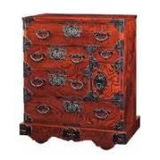

南部鉄器
南部鉄器（なんぶてっき）は、岩手県の盛岡と奥州水沢で作られている金工品です。江戸時代中期に誕生した伝統工芸品で、南部藩で作られていたことから「南部鉄器」という名前が付けられとされています。
南部鉄器の特徴は、さびにくく長持ちすることや熱が均一に伝わること、保温性に優れていることなどです。鉄器ならではの重量と安定感、ざらりとした独特の風合いも相まって、素朴ながらの美しさも魅力となっています。
南部鉄器の代表ともいえる鉄瓶には、職人によって様々な紋様が施されています。表面がポコポコしたデザインのアラレ紋様は、鉄瓶の表面積を増やす目的で南部鉄器に用いられています。なお、南部鉄器の製品は鉄瓶だけではなく、鍋や風鈴、アクセサリーなども作られています。
岩屋堂箪笥
岩谷堂箪笥（いわやどうたんす）は、岩手県奥州市江刺区や盛岡市で作られている木工品です。現代の岩谷堂箪笥は、衣装箪笥や整理箪笥のほか、茶箪笥や書棚、座卓なども作られていますが、かつては箪笥としての機能だけでなく、階段にも利用できる階段箪笥や、火事などのとき移動が可能な車付きの車箪笥(車付箪笥）など、興味深い箪笥が作られていました。
岩谷堂箪笥の特徴は、大きな存在感と箪笥に施された美しい飾り金具です。金具には「手打ち彫り」と「南部鉄器金具」の2種類あり、箪笥一棹に60～100個もの美しく浮き彫りされた絵模様の金具が施され、格調ある家具に仕上がっています。岩谷堂箪笥は漆塗りが施されていますが、塗りと磨きの工程を繰り返し行う「拭き漆塗り」と「木地蝋塗り」の2種類があり、どちらも木目が美しく使うほどに深い風合いが生まれる重厚な家具となっています。